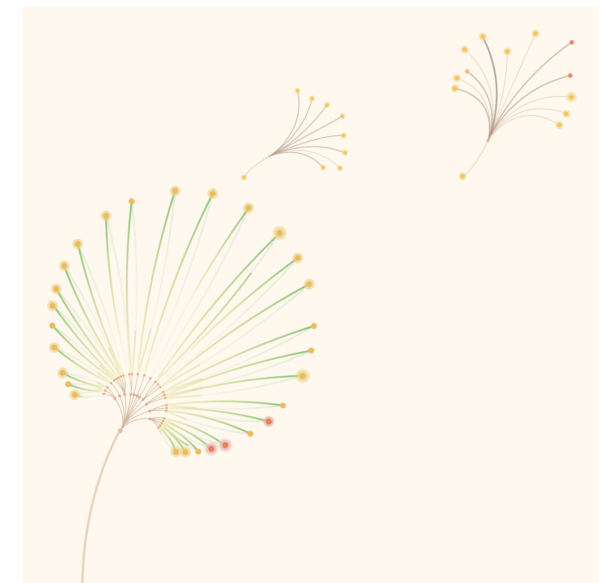
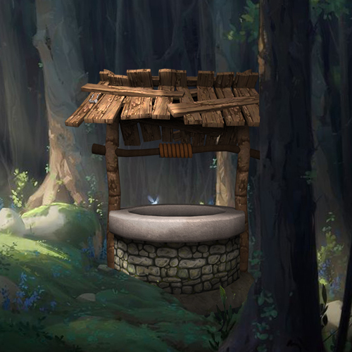

꿈은 꾸는 사람의 신념과 이상이 반영되는 곳입니다. 그러한 꿈에 가장 효과적으로 접근하는 방법은 루시드 드림입니다. 우리는 꿈을 통해서 자신의 마음을 되돌아볼 수도 있고, 상상의 세계를 펼쳐볼 수도 있습니다. Wonderland.를 통해서 올바른 방법으로 루시드 드림을 시작해보세요.

Multimedia Design Spreading Stock
우리나라의 주식시장이 본격적으로 시작된 1956년, 등록된 상장회사는 12개뿐이었지만, 지금은 2,000여 개가 넘습니다. 작은 꽃들이 모여 한 송이의 민들레가 되듯이 수많은 상장회사가 모여 이루어지는 한 해 동안의 주식 시장을 민들레로 형상화한다면 어떤 모습일까요?

Moving Image Animation Beyond that Door
차원 이동, 마법사, 몬스터 이러한 것들은 소설이나 만화 속에서나 등장하는 단어인 줄 알았다. ‘내(콜린)’가 지금 있는 곳은 어디일까? 나는 그냥 귀여운 고양이를 무작정 따라왔을 뿐인데, 오래된 우물 속을 들여다보았을 뿐인데, ‘너’는 누구이고, ‘나’는 왜 이곳에 있을까?